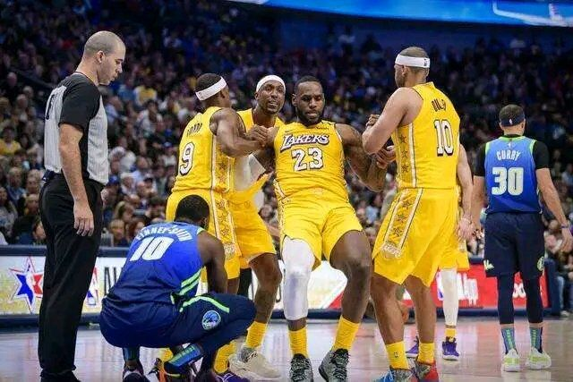
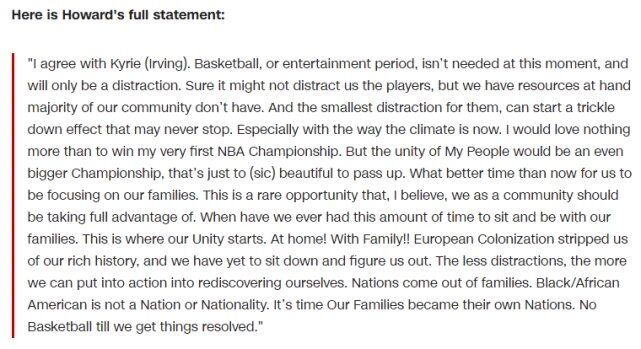
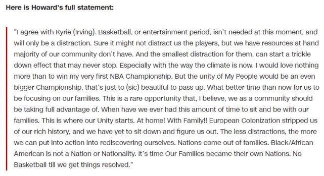
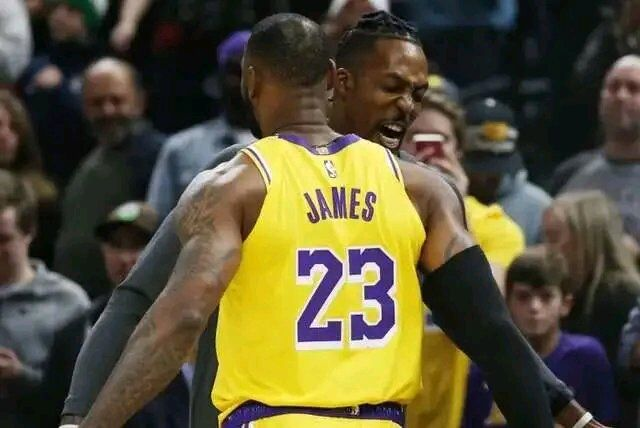
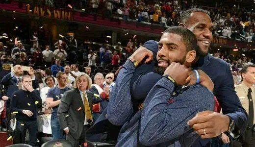

追球者 2020-06-14
欧文呼吁罢赛的事件引热议，安东尼、杜兰特以及霍华德等一批球员都在电话会议中赞同欧文罢赛的观点，不过詹姆斯等一些大牌巨星都想复赛，很明显，当今联盟针对复赛一事，球员之间已经呈现出三个派系——欧文罢赛系、詹姆斯等复赛系以及中立不说话的。
就在不久前，湖人球员德怀特-霍华德正式发表一份声明：
 

我支持凯里（欧文）。现在不需要篮球或娱乐时间，只会分散注意力。当然这可能不会分散我们球员的注意力，我们手里有资源，但我们社区的大多数人没有。尤其是现在的大环境。除了赢得我的第一个NBA总冠军之外。我别无所求，但“我的人民”的团结将是一个更大的冠军，这只是一次美丽的错过。我认为，这是一个难得的机会，我们作为一个社区应该充分利用这个机会。我们什么时候有这么多时间和家人坐在一起。这是我们团结的起点。在家里！和家人一起！！是时候让我们的家庭成为自己的国家了，在我们解决问题之前不要打篮球。
34岁“魔兽”霍华德公开力挺欧文罢赛，不仅直言除了赢得我的第一个NBA总冠军，我别无所求。但是“我的人民”的团结将是更大的冠，而且还说在问题解决之前不要打篮球。
霍华德是第一个发表声明，公开支持欧文罢赛的球员，可湖人领袖詹姆斯一心想着复赛，甚至在群里积极引导队友备战复赛，如今霍华德公开发言站在詹姆斯的对立面，势必影响湖人队内的氛围。